← Tous les projets

Identité visuelle
The Green Kitchen Club
Le plaisir de mieux manger
Une série de pictogrammes de fruits et légumes, tenue par un même style graphique. Autour d'eux, un logo et une ébauche de système d'avatar, pour vérifier que la cohérence tient au-delà des icônes.
Le brief
Une série qui tient ensemble
Créer une série cohérente de huit à dix pictogrammes autour d'un thème libre. Toute la difficulté est là : ce n'est pas de dessiner une icône réussie, c'est que la dixième ressemble à la première. J'ai choisi les fruits et légumes, et monté autour d'eux une marque, The Green Kitchen Club.
Formes simples
Une silhouette reconnaissable au premier coup d'œil, même en tout petit.
Traits homogènes
La même épaisseur partout : c'est ce qui fait que la série se lit comme un ensemble.
Cohérence d'ensemble
Mêmes couleurs, mêmes proportions, même vocabulaire de formes d'une icône à l'autre.
L'iconographie
Des fruits et légumes en aplats
Chaque pictogramme est construit sur le même principe : une masse pleine en aplat, une feuille ou une tige en vert foncé posée en contrepoint, et une réserve blanche taillée en triangle qui sert de reflet. Ce petit triangle est le détail qui signe la série : on le retrouve dans la pomme, la poire, la tomate, le raisin, le champignon et la carotte, toujours au même endroit et à la même inclinaison.
Outils

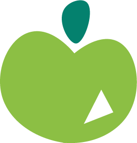
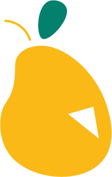
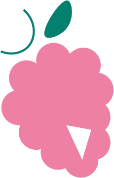
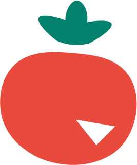
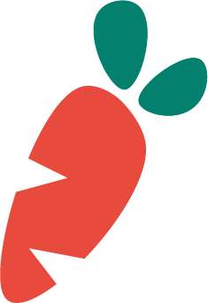
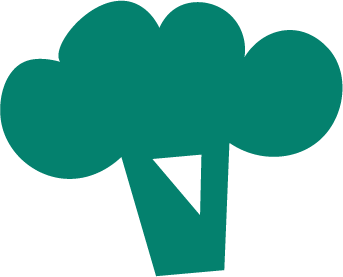
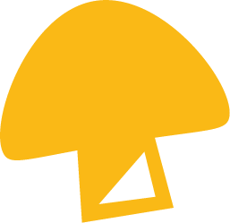
L'identité
Un logo pour appuyer la cohérence
Le brief ne demandait pas de logo. Je l'ai ajouté parce qu'une série de pictogrammes ne prouve sa cohérence qu'une fois posée dans un contexte. Les lettres sont dessinées une à une, légèrement de travers, chacune dans une couleur de la palette. La baseline est calée dans un bandeau vert qui reprend la couleur dominante des pictogrammes.
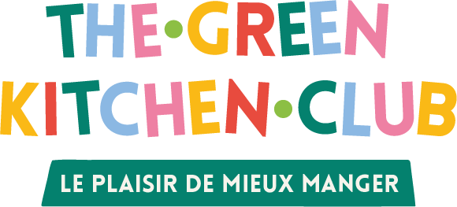
La palette
Vert profond #04816E
La couleur dominante. Feuilles, tiges, bandeau de la baseline.
Vert pomme #8CBF44
Le vert clair du frais et du végétal, en contrepoint du vert profond.
Jaune #FAB916
La poire et le champignon. Apporte la lumière dans la série.
Rouge #E84B3E
La tomate et la carotte. Le point d'accent le plus fort de l'ensemble.
Rose #EE80A3
Le raisin. Casse le côté trop sage d'une palette uniquement fruitière.
Bleu ciel #8BB8E3
Présent seulement dans le logo, pour respirer entre les couleurs chaudes.
Le prolongement
Une ébauche de personnalisation
Dernière étape, la plus exploratoire : un début de système d'avatar pour les membres du club. Dix coiffures, une gamme de teintes de cheveux, quatre carnations, et un buste vert commun à toutes les combinaisons. Chaque élément est dessiné pour s'assembler avec les autres, sur la même base de tête. Ce n'est pas un produit fini, c'est la démonstration que le style tient aussi quand on quitte les fruits et légumes.
Les dix coiffures
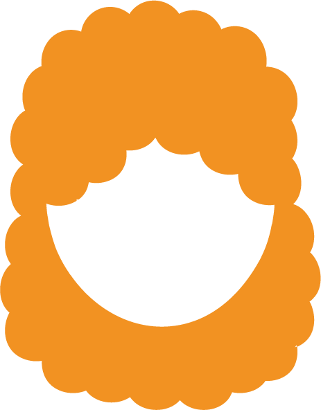
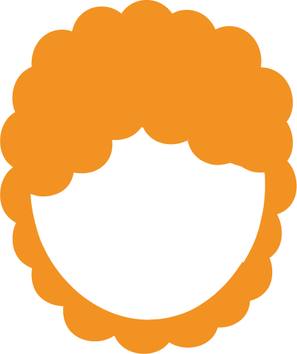
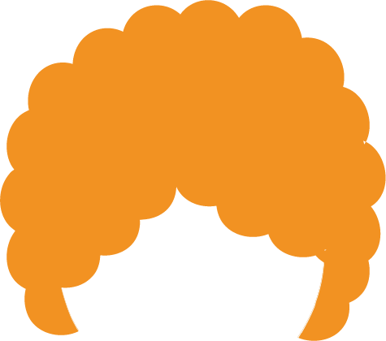
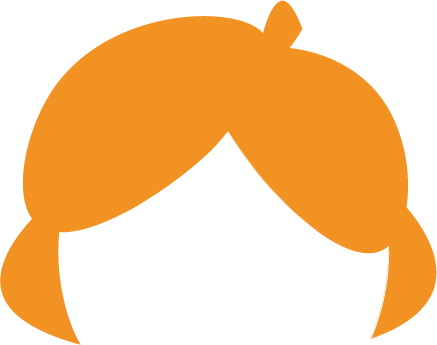
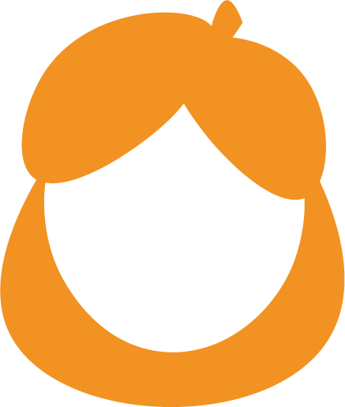
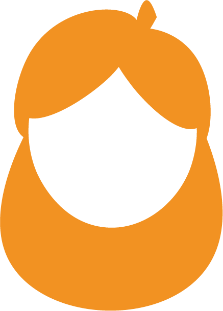
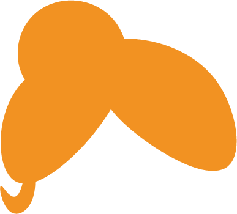
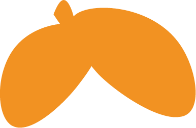
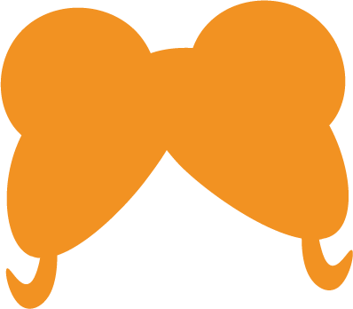
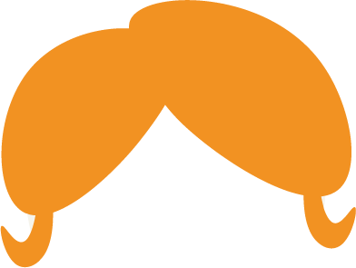
Les quatre carnations
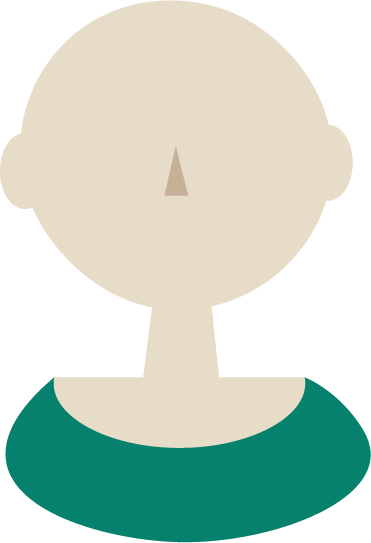
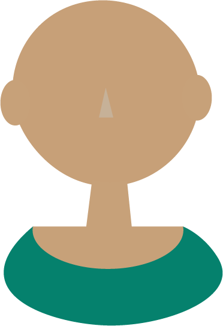
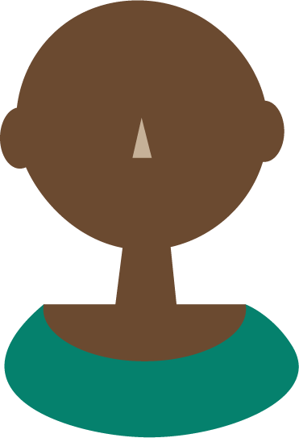
Quatre exemples d'assemblage
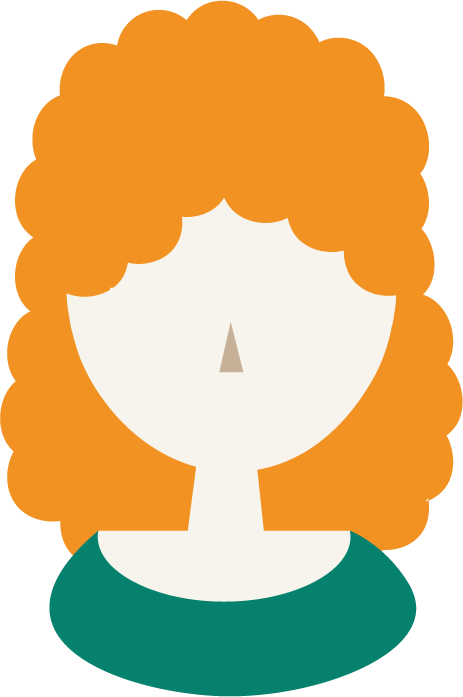
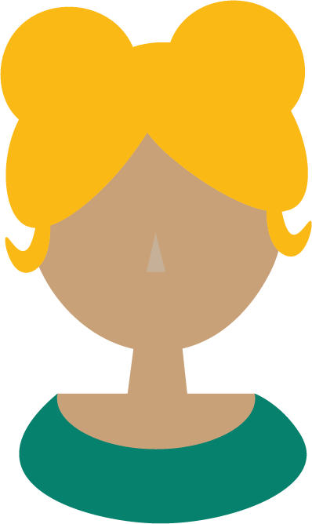
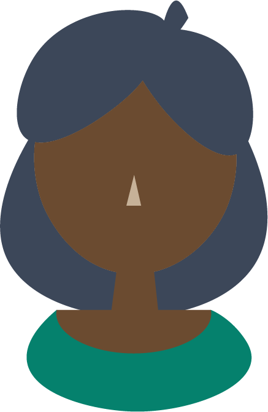
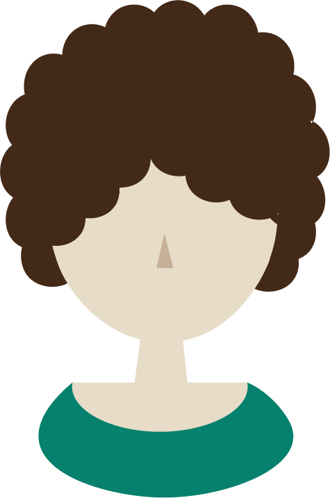
Le mot de la fin
Ce que le projet m'a appris
Illustrator, d'abord, que ce projet m'a fait pratiquer en profondeur. Et surtout la cohérence visuelle : tenir un même style sur une série entière, se fixer des règles au premier dessin et s'y tenir jusqu'au dernier. C'est beaucoup moins évident qu'il n'y paraît, et c'est ce qui fait la différence entre une collection d'icônes et une vraie identité.
Projet suivant